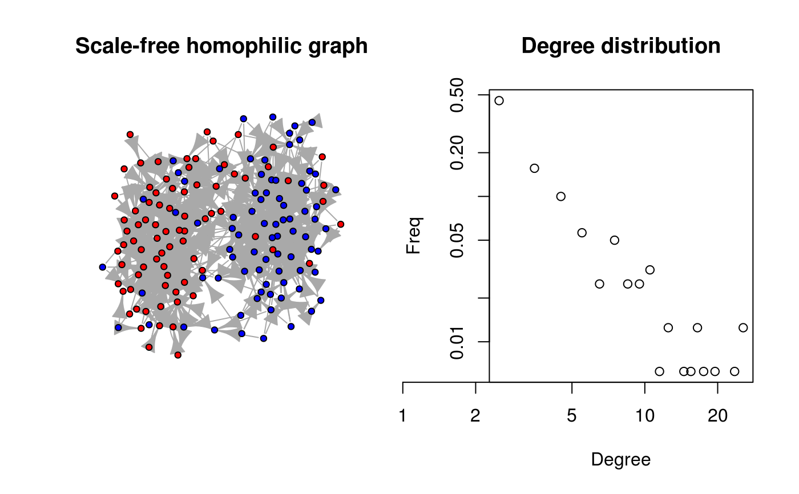

Generates a scale-free random graph based on Bollabas et al. (2001), also know as
Linearized Chord Diagram (LCD) which has nice mathematical propoerties.
And also scale-free homophilic networks when an vertex attribute eta is
passed.
rgraph_ba(m0 = 1L, m = 1L, t = 10L, graph = NULL, self = TRUE, eta = NULL)
| m0 | Integer scalar. Number of initial vertices in the graph. |
|---|---|
| m | Integer scalar. Number of new edges per vertex added. |
| t | Integer scalar. Number of time periods (steps). |
| graph | Any class of accepted graph format (see |
| self | Logical scalar. When |
| eta | Numeric vector of length |
If graph is not provided, a static graph, otherwise an expanded
graph (t aditional vertices) of the same class as graph.
The resulting graph will have graph$meta$undirected = FALSE if it is of
class diffnet and attr(graph, "undirected")=FALSE otherwise.
Based on Ballobás et al. (2001) creates a directed random graph of size
t + m0. A big difference with B-A model
is that this allows for loops (self/auto edges) and further multiple links,
nevertheless, as \(t\) increases, the number of such cases reduces.
By default, the degree of the first m0 vertices is set to be 2 (loops).
When m>1, as described in the paper, each new link from the new vertex
is added one at a time
“counting ‘outward half’ of the edge being added as already contributing to the degrees”.
When self=FALSE, the generated graph is created without autolinks. This
means that at the beginning, if the number of links equals zero, all vertices
have the same probability of receiving a new link.
When eta is passed, it implements the model specified in De Almeida et al.
(2013), a scale-free homophilic network. To do so eta is rescaled to
be between 0 and 1 and the probability that the node \(i\) links to node \(j\)
is as follows:
$$ \frac{(1-A_{ij})k_j}{\sum_j (1-A_{ij})k_j} $$
Where \(A_{ij} = |\eta_i - \eta_j|\) and \(k_j\) is the degree of the \(j\)-th vertex.
Bollobás, B´., Riordan, O., Spencer, J., & Tusnády, G. (2001). The degree sequence of a scale-free random graph process. Random Structures & Algorithms, 18(3), 279–290. http://doi.org/10.1002/rsa.1009
Albert-László Barabási, & Albert, R. (1999). Emergence of Scaling in Random Networks. Science, 286(5439), 509–512. http://doi.org/10.1126/science.286.5439.509
Albert-László Barabási. (2016). Network Science: (1st ed.). Cambridge University Press. Retrieved from http://barabasi.com/book/network-science
De Almeida, M. L., Mendes, G. A., Madras Viswanathan, G., & Da Silva, L. R. (2013). Scale-free homophilic network. European Physical Journal B, 86(2). http://doi.org/10.1140/epjb/e2012-30802-x
Other simulation functions:
permute_graph(),
rdiffnet(),
rewire_graph(),
rgraph_er(),
rgraph_ws(),
ring_lattice()
# Using another graph as a base graph --------------------------------------- graph <- rgraph_ba() graph#> 11 x 11 sparse Matrix of class "dgCMatrix"#>#> #> 1 1 . . . . . . . . . . #> 2 1 . . . . . . . . . . #> 3 1 . . . . . . . . . . #> 4 . . 1 . . . . . . . . #> 5 1 . . . . . . . . . . #> 6 . . 1 . . . . . . . . #> 7 1 . . . . . . . . . . #> 8 . . 1 . . . . . . . . #> 9 1 . . . . . . . . . . #> 10 . . . . 1 . . . . . . #> 11 1 . . . . . . . . . .graph <- rgraph_ba(graph=graph) # Generating a scale-free homophilic graph (no loops) ----------------------- set.seed(112) eta <- rep(c(1,1,1,1,2,2,2,2), 20) ans <- rgraph_ba(t=length(eta) - 1, m=3, self=FALSE, eta=eta) # Converting it to igraph (so we can plot it) ig <- igraph::graph_from_adjacency_matrix(ans) # Neat plot showing the output oldpar <- par(no.readonly = TRUE) par(mfrow=c(1,2)) plot(ig, vertex.color=c("red","blue")[factor(eta)], vertex.label=NA, vertex.size=5, main="Scale-free homophilic graph") suppressWarnings(plot(dgr(ans), main="Degree distribution"))par(oldpar)